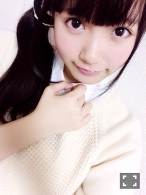
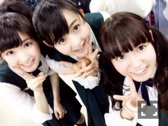

| 2015/02 24 Tue | 中元日芽香 ひめたん-OoO-その523 |
昨日は乃木坂46デビュー3周年、
そして3rd Year Birthday Liveを
西武ドームで行いました！
ライブのことで書きたいことが
たくさんあるのですが、
その前にみなさんに
報告したいことがあるので
ライブのレポは次回( ˇωˇ )
11thアンダーメンバーのセンターを
務めることになりました
私にとって初めてのポジションです。
これまでずっと活動する中で
ネガティブになることが多くて
くよくよしてばかりいましたが
最近になって
与えられたポジションを
全うすることが1番じゃないか
そのためには
自分がアンダーだからとか
そんなことは関係ないじゃないか
そう思うようになりました
そんなタイミングでの任命でした。
今回センターを務めることで
アンダーメンバーとして
3列目、2列目、そして1列目フロント
すべてのポジションを
経験することになります
私にできること、
私らしさって何だろうって考えたときに
今までの経験がきっと
今の私の強みになってくれると
思いました。
アルバムで一区切りついて
スタートとなる今回のシングル
みんな新たな気持ちで挑んでいます
そんな中で任命された
アンダー楽曲の初センター。
メンバーにもファンの皆さんにも
新鮮な光景だと思います
私が真ん中に立つことで
アンダーメンバー全体の
違った色を見せていきたい
こんな私でもセンターが務まるんだ
乃木坂は層が厚いなって
少しでも感じてもらいたい。
最近は自分のことだけでなく
乃木坂46のこと
全体のことを考えるようになりました
私が頑張ることで
何か乃木坂46のために
プラスになるようなことはないだろうか
もっと必要とされる人になりたい
そのためにも11thでさらに
力をつけていきたいです。
そして3rdアンダーライブ開催が
決定しました
昨日をもって研究生全員が昇格、
正規メンバーとなってから
はじめてのアンダーライブ
きっと6人にとっても
ファンの皆さんにとっても
特別な思いがあると思います
もちろん私たち一期生にとっても。
アンダーライブは
去年の4月13日にスタートしてから
3rdの初日でちょうど1年。
あの頃はこんなにも多くの方に
期待していただけるライブになるなんて
思いもしませんでした
アンダーライブは1回1回が
これが最後かもしれない
そう思って全力を注いできたものなので
こうしてまた開催が決まって
本当に嬉しいことです。
アンダーライブが始まってから
万理華が切り開いてくれて
さゆが大きくしてくれた
アンダーメンバーの存在感
2人が背負ってきたものの
重み、プレッシャーというのを
今になって少しずつ感じているのですが
ここで勢いを止めるわけにはいかない
私もふたりのあとに続こうと思います。
メンバーも変わって
ポジションもそれぞれ変わりますが
やっぱりアンダーライブ熱いな！
一体感半端ないな！
そう思ってもらえるようなライブを
みんなと作りたいと思います
私にとってライブは
ひとつのメインフィールド。
みなさんにもぜひ
遊びに来てもらって
パワーを感じていただきたいです！
今日のおに魂で
アンダー楽曲が解禁になりました
タイトルは
「君は僕と会わない方が
よかったのかな」
相手を思う気持ちは
誰よりも強いはずなのに
その思いをすべて伝えきれずに
空回ってしまう「僕」の
やさしさと切なさを感じる曲です
真っ直ぐにしか進めないんであろう
頑固で不器用な「僕」が
私と重なるような気がします
特に歌詞の一番最後のフレーズが
自分の中で響くものがあって
散々に打ちのめされて失敗して
今の自分では力不足なんだと
わかっていても
それでも自分の道を行くんだ！という
芯の強さみたいなものを感じて
歌っていて思わず感情が入りました
そして明るいメロディーが
何か奮い立たせてくれているようで
悲しい曲なはずなのに不思議と
聴いてて前向きになれる曲。
きっと私は「僕」の気持ちを
誰よりも飾らず
素直に歌えると思います
私にとってとても大切な楽曲
皆さんにも愛していただけたら
幸せです。
未完成でありのままで
自分に自信のない「僕」には思わず
シンパシーを感じてしまいますが
それだけ今の自分には
一番前というポジションに立つために
足りないものが多いというのも現状。
私はこの楽曲をきっかけに
私自身が変わりたい
いえ変わらなければいけない
がんばります。


中元日芽香